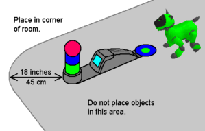

Popular
Tools
Tech Info
Links
DIY Charger Extensions
Contents of this website are freeware and/or copyrighted material, and may not be sold under any circumstances.
Email: dogsbody@dogsbodynet.com Home: https://dogsbodynet.com
| Introduction The 210/220 charger extensions are two pieces. A front mounted tower base, and rear-mounted alignment circle. Images and dimensions are shown to the right. The correct shades of blue & green, plus the height & position of the tower and disc are all important. Getting the colors correct can be tricky. The height and position of the pink ball is very important for AIBO finding the station, and during final approach. If the disc is too large/small, AIBO could have difficulty aligning itself. A marginal solution might allow docking to work occasionally, but fail more frequently than a correct solution. AIBO bumps into the charger quite a bit while docking, so build accordingly. Probably the best solution is some thin stiff cardboard, or hardboard, with the disc, tower & charger all taped/glued down. Links to printable 150dpi images of the tower base & circle are also provided, which may help. Tower & Base Instructions The top of the pink ball needs to be 8.75" (22.2cm) off the floor, with the center of the ball 5.25" (13.5cm) from the front of the charger. There must be blue & green on the tower under the pink ball. The green & blue cylinders are 2.34" (6cm) high. Diameter of 2.44" (6.2cm). Circumference of 7.67" (19.5cm). Make strip of heavy colored paper 7.67" (19.5cm) long by 2.34" (6cm) high, and wrap into a tube to form a cylinder. Rear Disc Instructions The rear disc must be blue about 5" (12cm) in diameter, with a smaller 2.38" (6cm) diameter green disc centered. The disc assembly should touch the back of the charger. Assembly Attach tower, base & rear disc as shown below: 
|
|
{kind=link}
{kind=link}